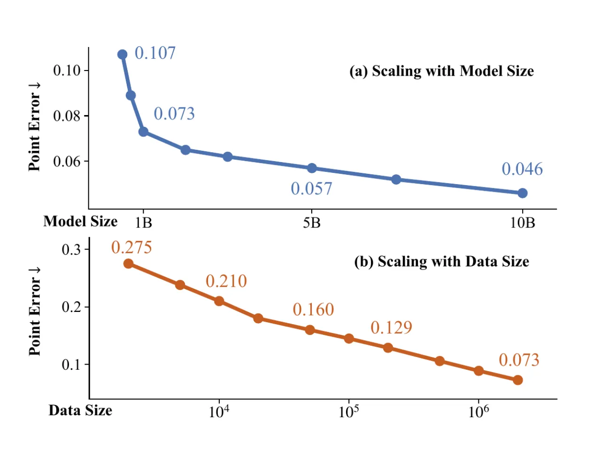
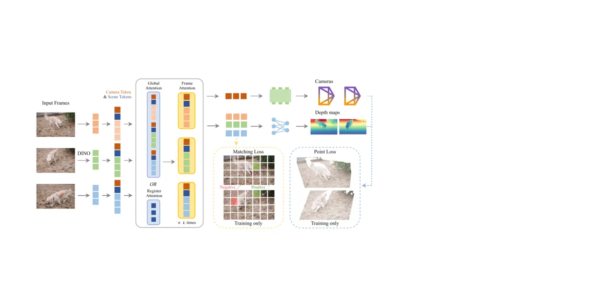
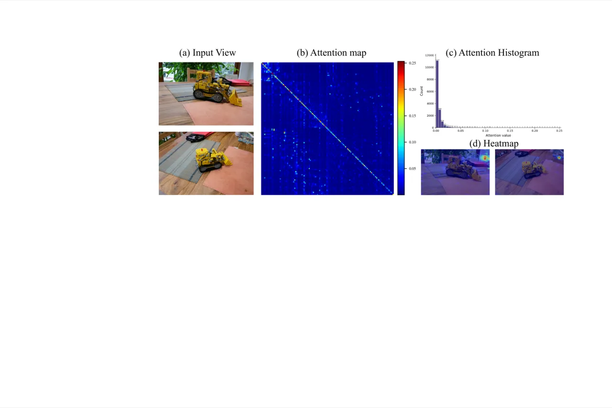
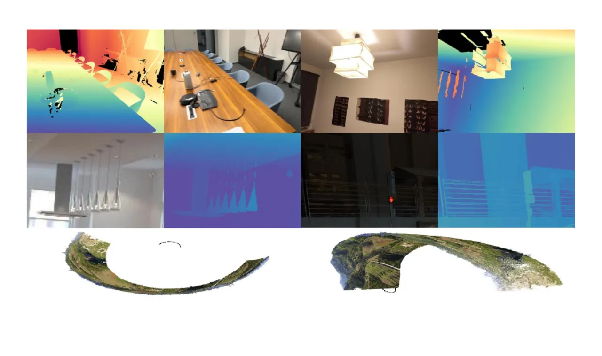
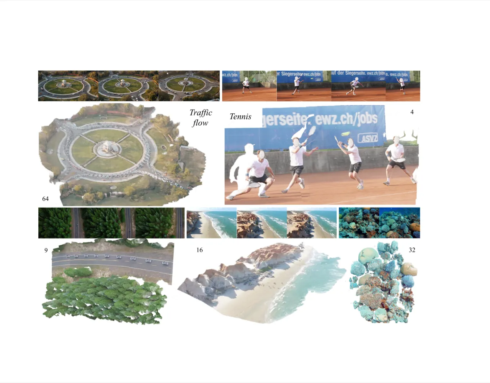
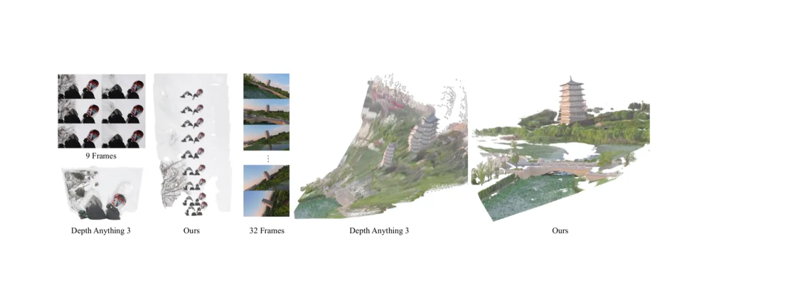
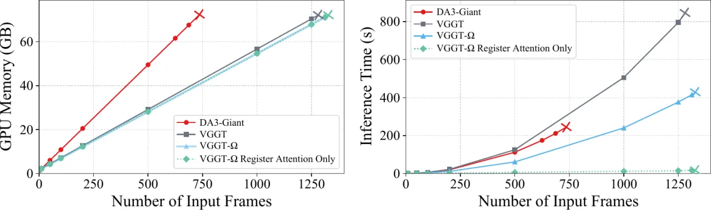
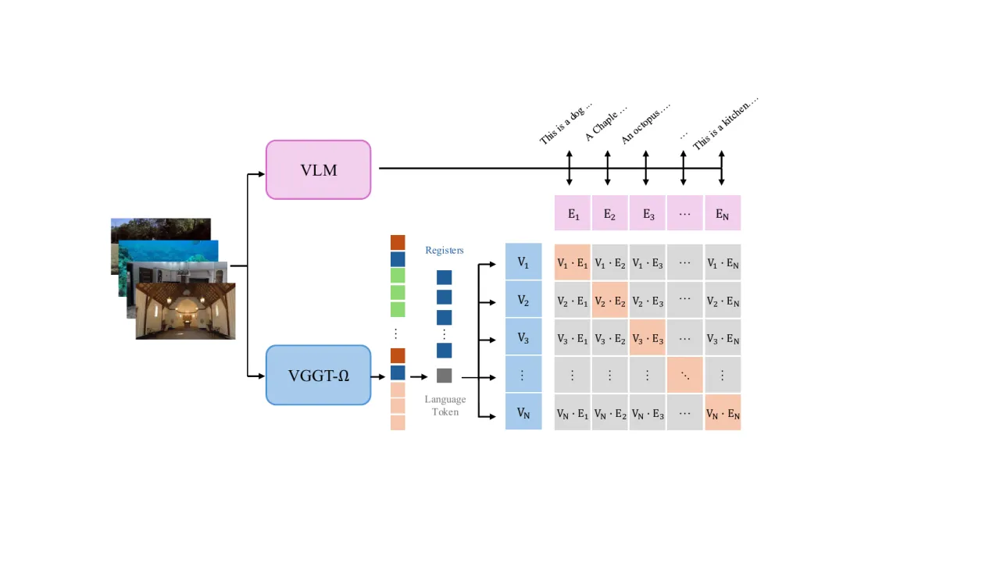
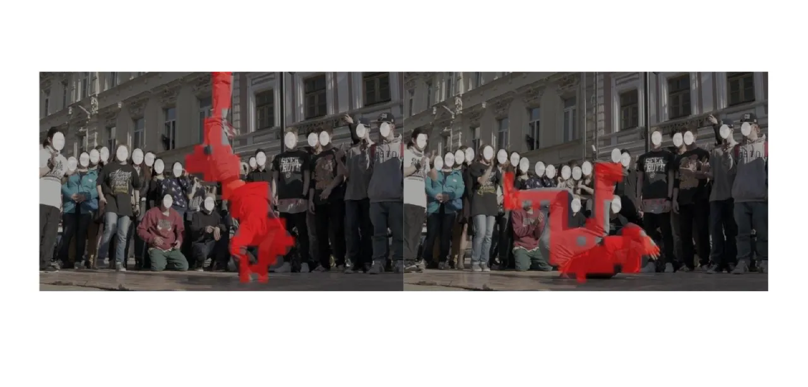

一个前馈 Transformer：将 N 张输入图像映射为每帧的相机参数与深度图，同时支持静态与动态场景。它在精度、效率与能力上全面超越 VGGT，训练显存仅为前代的约 30%——从而得以用 15× 的监督数据 + 海量无标注视频进行训练。
近年来的工作表明，前馈式重建模型在许多情况下能够匹敌、甚至超过传统的运动恢复结构（SfM）管线。更进一步，这类模型学到的 token 已被用作有效的「几何感知表征」服务于很多其它任务。这说明重建本身可以作为学习空间理解表征的代理任务，具有基础模型的价值。
然而，相比在 2D 视觉与 NLP 中「规模（scale）的作用已被充分理解」，这一点在 3D 计算机视觉中几乎没被探究过。因此本文要回答：
前馈重建模型能否被扩展到更大规模？这种扩展会带来什么收益？
为回答这个问题，本文同时解决三个障碍：
全局注意力与高分辨率卷积解码头主导了 GPU 显存。→ 提升训练效率的架构改造
带准确标注的数据有限，且大多为静态。→ 支持动态场景的高质量数据标注管线
绝大多数真实视频都含运动、且没有几何标注。→ 自监督学习协议

VGGT-Ω 是一个前馈 Transformer f，将 N 张图像映射为相机 旋转四元数 q平移 t视场角 f 与深度图 D。与 VGGT 不同，模型不直接预测点图或 tracking 特征（但仍以损失监督它们）。

VGGT 交替使用逐帧自注意力与全局自注意力。「全局注意力是 VGGT 的主要计算瓶颈，但其注意力图非常稀疏」——这暗示少量 token 就足以交换相应信息。
因此 VGGT-Ω 把 25% 的全局注意力层替换为 register attention，在这些层里「帧间的信息交换被限制在寄存器之间」。更新后的寄存器随后在逐帧注意力块中与各帧图像 token 交互，「从而形成一个聚合并重新分发多帧信息的瓶颈」。本文也把这些寄存器称为「场景（scene）token」。

「密集预测头（如 DPT）中的高分辨率卷积层，尽管只占模型很小一部分参数，却为存储前向激活消耗了不成比例的 GPU 显存。」1/4 分辨率以上的卷积块被替换为「单个 MLP + pixel-shuffle 的轻量上采样头，显存极省且性能不降」。
纯卷积-free 解码器在 benchmark 上表现很好，但在室外场景产生方块伪影，因此保留了计算开销极小的早期低分辨率 DPT 卷积。
「我们仍使用多任务损失，但只保留一个深度密集头和一个稀疏相机头。」模型虽不直接输出点图和 tracks，但仍以损失监督它们。训练损失包含：
「这三项改造合计节省 70% 训练显存，并略微提升推理速度。」
处理动态内容「解锁了数量级更多的互联网式视频用于训练」。模型「只预测深度图与相机参数，避免运动掩码等显式动态输出」。ray map 被否决，因为它「增加昂贵的稠密输出，并会把相机信息与逐像素外观变化纠缠在一起」——例如固定相机拍摄一名舞者，画面运动很大但相机参数不变。期望数据驱动的模型自己学到比手工低秩/局部刚性约束更好的运动先验。
借鉴 DINO 风格的动量教师-学生方法。两个网络都从监督训练好的 VGGT-Ω checkpoint 初始化，对同一组帧施加独立增强（颜色抖动、模糊、随机 90° 旋转、patch 遮挡、帧序打乱）。对齐到统一帧序后，student 通过跨层 ℓ2 特征匹配损失 + 相机/深度回归损失匹配 teacher；teacher 用 EMA 更新，且「相机与深度头在自监督期间冻结」以防坍塌。以此在 1800 万段无标注视频上训练。
「VGGT-Ω 的一个重要方面是扩展训练数据」——将大量公开数据集与一条专为处理现成视频中动态内容而构建的新标注管线结合。
30+ 公开数据集（Aria、Co3Dv2、DL3DV、Dynamic Replica、Hypersim、ScanNet、Waymo……）+ 内部数据，共「约 3M 序列，每个含 10 到 20,000 张图像」。剔除了 Kubric 与 PointOdyssey，「因为它们的背景几何是假的、深度无效」。
从「约 4000 万条互联网式视频」出发、宁缺毋滥，「我们得到约 20 万动态场景和 60 万静态场景，带高质量相机与深度标注」。
| 阶段 | 做法 |
|---|---|
| VLM 预筛 | VLM 判定 50% 的片段太难、40% 可重建但精度低，仅剩 10% 进入下一阶段；同时抽取「是否动态」等元数据。 |
| 动态掩码 | 用 Grounding DINO 检测人、车等可动类别；这些区域从匹配、跟踪、验证中排除。 |
| 特征匹配与跟踪 | SIFT、SuperPoint & SuperGlue、ALIKED & LightGlue、VGGSfM Tracker 集成。 |
| 重建与过滤 | RANSAC 内点过少时用 VGGT 初始化相机，再用 COLMAP 光束法平差；按注册率、视场角、畸变率启发式过滤；patch-based MVS 估计稠密深度。 |
| 多视一致性 | 深度反投影、再投影到其它视图比较；有效深度像素 <5% 的序列丢弃。 |
| 监督几何过滤 | 用 camera-up 一致性、视差角、轨迹平滑度等手工特征，喂给在 500 静态 + 500 动态人工标注序列上训练的 XGBoost + 随机森林 + CatBoost 集成。 |
「拥有大量数据是不够的；数据的质量同样有强烈影响。」本文观察到「模型虽然学到了 3D 重建的一般原理，但也会死记硬背特异的噪声」。这些失败模式「不影响标准 benchmark 中的大多数图像，因此在定量结果里可能检测不到」。

四个模型规模——200M / 500M / 1B / 10B——在 128 块 96GB H100 上（bfloat16、梯度检查点、FSDP）训练 240K 步（160K 监督 + 50K 自监督 + 30K 监督）。在三个静态 + 三个动态 benchmark 上评测。
| Sintel（动态） | 之前最佳 | VGGT-Ω | 提升 |
|---|---|---|---|
| 相机 AUC@3° | 22.5 | 40.0 | +77% |
| 相机 AUC@30° | 58.3 | 79.1 | +35% |
| 深度 δ₁.₂₅ | 74.1 | 93.5 | +26% |



| 设置 | Point error ↓ | 结论 |
|---|---|---|
| 数据每步 10× 递增 | 0.275 → 0.073 | 单调下降，类幂律 |
| 仅全局注意力 | 0.071 | 基准 |
| + 25% register attention | 0.073 | 「与原版几乎相同」 |
| 去掉点 + 匹配损失 | 0.078（变差） | 多任务损失有用 |
| VGGT 多头多任务设置 | 0.070 | 略好但难规模化 |
| + 10% 自监督步 | 0.073 → 0.070 | 略升；OOD 泛化更好 |
标注质量。在 Sintel 上，本管线伪标签达到 96.4% AUC@30°（MegaSaM 62.1%）、深度 δ₁.₂₅ 99.3%（MegaSaM 77.2%）。「我们生成伪标签的目标不是最大化产量，而是只保留极有可能正确的序列与像素」——管线刻意保守。
一个关键发现：「学到的寄存器可以在重建之外被复用」——它们「携带高层、很可能相当语义化的信息，可与语言空间对齐」。
从冻结的 VGGT-Ω 抽取寄存器（场景 token），拼接到 OpenVLA-OFT 输入 token。「几何感知的寄存器在所有 LIBERO 任务上一致提升性能。」
用 CLIP 风格对比学习把寄存器派生嵌入与 VLM 文本嵌入对齐。该 language token「从不直接观察图像 patch token，只能读取寄存器」，因此对齐成功证明寄存器本身携带场景级信息。视频检索 top-1 76.8% / top-3 97.0%；零样本迁移到纯文本 LLM 嵌入仍有 47.5% / 77.8%。


在「Further Insights / Discussion」中，作者分享了「尚未严格证实、但我们认为对分享仍有用」的经验性观察。其中不少正是当前方法的局限与权衡。
「纯 MLP 头会在预测深度图上产生可见的 patch/block 伪影，尽管它们在定量指标上常优于卷积方案、更快、更省显存。」该问题「在室外场景比室内更普遍，尤其当场景含远景物体时」（无界深度）。mipmap 风格监督、概率建模等补救「都没能可靠去除伪影」，因此折中保留少量浅层卷积。作者仍认为「纯 MLP 密集解码头是一个有前景、重要的方向」。
「迄今我们发现它有助于改善模型泛化，尤其是 OOD 数据，但对大多数 benchmark 影响很小。要做得更好并非易事。」作者尝试了新视图合成、RayZer/E-RayZer 变体、token 生成、NeRF/高斯泼溅目标、token 掩码、时序等——「在我们的实现里只有 teacher-student 奏效」，且仍需预训练模型。「自监督重建对社区而言仍是开放问题。」
曾尝试一个预测无效区域的额外分支，希望模型忽略天空。「尽管模型准确预测了无效掩码，天空像素仍出现在深度估计的前景中，很可能是这些区域缺乏监督信号所致。」该预测头最终从模型中移除。
「一旦模型收敛，我们观察到训练时加不加预测归一化在定量性能上没有差别。归一化的主要好处是定性的……缺点是优化变得不稳定，学习曲线更陡，需要更细致的调参以避免梯度爆炸。」
使用 VGGT 的相机迭代细化、向密集头注入原始 RGB 等技巧，「在多个数据集上 AUC@3° 进一步提升 4%–6%、δ₁.₂₅ 约 2%」，但「我们刻意优先保持模型整体的简单性」，以便为社区提供更干净的基座。
「在预训练阶段引入这些先验，即使随机或跨迭代掩码施加，往往是有害的。」只在微调阶段提供条件辅助输入（时序、相机、深度、尺度）「非常有效」。
如「数据质量」一节，模型会「死记硬背特异噪声」（如把人当作地面的一部分），失败在标准 benchmark 上不可见——只能靠激进的数据过滤缓解，即强烈依赖数据清洗管线。